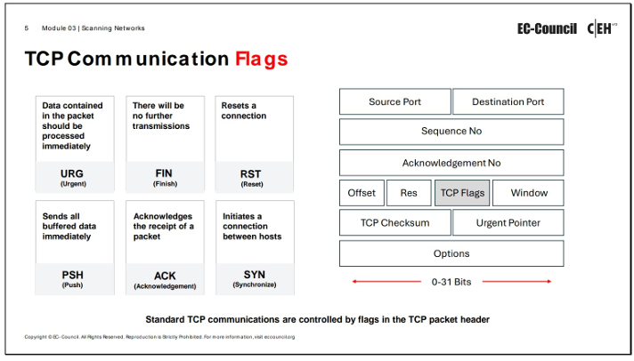

CEHv13 - Module 03: Scanning Networks
1. Network Scanning Concepts
Network scanning is an extended form of reconnaissance where an attacker gathers more details about a target system, including information about operating systems (OSs), services, and configuration lapses. It refers to procedures used for identifying hosts, ports, and services in a network.
Objectives of Network Scanning
- Discovering live hosts, their IP addresses, and open ports.
- Discovering OSs and system architecture (also known as fingerprinting).
- Discovering services running on hosts.
- Identifying specific applications or versions of services.
- Discovering vulnerabilities in live hosts.
- Mapping out network topology.
Attackers use tools like Nmap, Hping3, Metasploit, and NetScan Tools Pro for network scanning.
2. TCP Communication Flags
The TCP header contains six control flags (each 1 bit) that manage connections and provide instructions.

Figure: TCP Communication Flags
- SYN (Synchronize): Notifies transmission of a new sequence number, generally for connection establishment (three-way handshake).
- ACK (Acknowledgement): Confirms packet receipt and identifies the next expected sequence number.
- PSH (Push): Instructs the remote system to inform the receiving application about buffered data immediately.
- URG (Urgent): Instructs the system to process data in packets immediately, prioritizing urgent data.
- FIN (Finish): Announces no more transmissions will be sent, terminating the connection.
- RST (Reset): Aborts the connection due to an error. Attackers use this flag to scan hosts and identify open ports.
SYN scanning primarily involves SYN, ACK, and RST flags for gathering information from servers.
3. TCP/IP Communication
TCP Session Establishment (Three-way Handshake)
- Source sends a SYN packet to the destination.
- Destination responds with a SYN/ACK packet.
- Source sends an ACK packet, triggering an "OPEN" connection.
TCP Session Termination
- Sender sends a FIN or RST packet to the receiver.
- Receiver acknowledges with an ACK packet and then sends its own FIN packet.
- The connection is then terminated.
4. Scanning Tools
Nmap (Network Mapper)
- Identifies hosts, ports, and services by sending crafted packets and analyzing responses.
- Used for network inventory, managing service upgrade schedules, monitoring uptime (administrators), and extracting information like live hosts, open ports, services (application name and version), packet filters/firewalls, MAC details, and OSs (attackers).
- Syntax:
nmap <options> <Target IP address>
Hping3
- Command-line tool for network scanning and packet crafting (TCP/IP protocol).
- Supports TCP, UDP, ICMP, and raw-IP protocols.
- Performs security auditing, firewall testing, MTU discovery, traceroute, remote OS fingerprinting, uptime guessing, TCP/IP stack auditing.
- Can send custom TCP/IP packets and display replies like ping.
Hping Commands:
- ICMP ping (
-1 or --ICMP)
- ACK scan (
-A) to probe for firewalls.
- UDP scan (
-2 or --udp).
- Collect Initial Sequence Number (
-Q).
- Firewalls and Timestamps (
--tcp-timestamp) to guess timestamp update frequency and uptime.
- SYN scan on port range (
-8 or --scan with -S).
- FIN, PUSH, and URG scan (
-F -P -U).
- Scan entire subnet for live hosts (
-1 <subnet>.x --rand-dest -I <interface>).
- Intercept traffic containing a signature (
-9 HTTP -I <interface>).
Can leverage AI (e.g., ChatGPT) to generate commands.
Metasploit
- Open-source project for penetration tests and security auditing.
- Provides information on vulnerabilities, aids in penetration testing and IDS signature development.
- Modular approach allows combining exploits with payloads.
- Automates discovery and exploitation.
- Metasploit Pro can scan for open ports/services, exploit vulnerabilities, pivot, collect evidence, and report.
- Can be guided by AI for port scanning.
NetScan Tools Pro
- Investigation tool for troubleshooting, monitoring, discovering, and detecting network devices.
- Gathers information about local LAN, Internet users, IP addresses, and ports.
- Helps find vulnerabilities and exposed ports.
Other Scanning Tools
- sx
- RustScan
- MegaPing
- SolarWinds Engineer's Toolset
- PRTG Network Monitor
5. Host Discovery Techniques
Host discovery is the primary task in network scanning to identify "alive" and responding systems. It avoids scanning every port on inactive systems.
Figure: Host Discovery Techniques
ARP Ping Scan
- Sends ARP packets to discover active devices in an IPv4 range, even behind firewalls.
- If a host is active, it generates an ARP response.
- Nmap's
-PR option performs ARP ping scan. (-sn disables port scan).
- Advantages: Efficient, accurate, handles retransmission/timeout, useful for large address spaces, displays response time.
UDP Ping Scan
- Nmap sends UDP packets to the target (default port 40125).
- UDP response means the host is active.
- Error messages (host/network unreachable, TTL exceeded) indicate offline/unreachable host.
- Nmap's
-PU option performs UDP ping scan.
- Advantage: Can detect systems behind firewalls with strict TCP filtering.
ICMP ECHO Ping Scan
- Sends ICMP ECHO requests; active hosts return an ICMP ECHO reply.
- Useful for locating active devices or checking if ICMP passes through a firewall.
- Works on UNIX/Linux and BSD-based machines that respond to broadcast ICMP echo requests.
- Nmap's
-PE option performs ICMP ECHO ping scan.
ICMP ECHO Ping Sweep
- Sends ICMP ECHO requests to multiple hosts in an IP address range.
- Active hosts return an ICMP ECHO reply.
- Nmap's
-PE option with an IP range performs ICMP ECHO ping sweep.
ICMP Timestamp Ping Scan
- Attackers query a timestamp message to get current time information from the target.
- Effective for identifying active hosts even when traditional ICMP ECHO pings are blocked.
- Nmap's
-PP option performs ICMP timestamp ping scan.
ICMP Address Mask Ping Scan
- Attackers send an ICMP address mask query to get subnet mask information.
- Also effective for identifying active hosts when traditional ICMP Echo ping is blocked.
- Nmap's
-PM option performs ICMP address mask ping scan.
TCP SYN Ping Scan
- Attacker sends an empty TCP SYN flag to the target.
- If the target responds with SYN/ACK, the host is active; the attacker then sends an RST to terminate.
- Port 80 is the default destination port.
- Nmap's
-PS option performs TCP SYN ping scan.
- Advantages: Can determine if a host is active without creating a full connection, leaving no traces in logs.
TCP ACK Ping Scan
- Attacker sends an empty TCP ACK packet to the target.
- Target responds with an RST flag, indicating the host is active.
- Default port is 80.
- Nmap's
-PA option performs TCP ACK ping scan.
- Advantage: Can bypass firewalls configured to block SYN packets.
IP Protocol Ping Scan
- Sends IP ping packets with the IP header of a specified protocol number.
- Any response indicates the host is online.
- Nmap's
-PO option performs IP protocol ping scan.
Ping Sweep Tools
- Angry IP Scanner
- SolarWinds Engineer's Toolset
- NetScanTools Pro
- Colasoft Ping Tool
- Advanced IP Scanner
- OpUtils
Host Discovery with AI
Attackers can use AI (e.g., ChatGPT) to automate host discovery tasks and generate commands for tools like Nmap.
6. Port and Service Discovery
Port and service discovery involves checking open ports and services on live systems using various port scanning techniques. Attackers use this to identify open ports and running services to compromise the network.
Common Ports and Services
| Name |
Port/Protocol |
Description |
| echo | 7/tcp, udp | |
| discard | 9/tcp udp | sink null |
| systat | 11/tcp | Users |
| daytime | 13/tcp, udp | |
| netstat | 15/tcp, udp | |
| qotd | 17/tcp, udp | Quote |
| chargen | 19/tcp udp | ttytst source |
| ftp-data | 20/tcp | ftp data transfer |
| ftp | 21/tcp | ftp command |
| ssh | 22/tcp | Secure Shell |
| telnet | 23/tcp | |
| SMTP | 25/tcp | Email server |
| time | 37/tcp, udp | Timeserver |
| rlp | 39/tcp, udp | resource location |
| domain | 53/tcp, udp | domain name server |
| sql*net | 66/tcp, udp | Oracle SQL*net |
| bootps | 67/udp | bootp server |
| bootpc | 68/udp | bootp client |
| tftp | 69/udp | Trivial File Transfer |
| gopher | 70/tcp | gopher server |
| finger | 79/tcp | Finger |
| www-http | 80/tcp udp | WWW |
| www-https | 80/tcp | www |
| kerberos | 88/tcp, udp | Kerberos |
| pop2 | 109/tcp | PostOffice V.2 |
| Pop3 | 110/tcp | PostOffice V.3 |
| sunrpc | 111/tcp, udp | RPC 4.0 portmapper |
| auth/ident | 113/tcp, udp | Authentication Service |
| audionews | 114/tcp, udp | Audio News Multicast |
| nntp | 119/tcp | Usenet Network News Transfer |
| ntp | 123/udp | Network Time Protocol |
| netbios-ns | 137/tcp udp | NETBIOS Name Service |
| netbios-dgm | 138/tcp, udp | NETBIOS Datagram Service |
| netbios-ssn | 139/tcp, udp | NETBIOS Session Service |
| imap | 143/tcp, udp | Internet Message Access Protocol |
| sql-net | 150/tcp, udp | SQL-NET |
| sqlsrv | 156/tcp, udp | SQL Service |
| snmp | 161/tcp, udp | SNMP |
| snmp-trap | 162/tcp, udp | |
| cmip-man | 163/tcp, udp | CMIP/TCP Manager |
| cmip-agent | 164/tcp, udp | CMIP/TCP Agent |
| irc | 194/tcp, udp | Internet Relay Chat |
| at-rtmp | 201/tcp, udp | AppleTalk Routing Maintenance |
| at-nbp | 202/tcp, udp | AppleTalk Name Binding |
| at-3 | 203/tcp, udp | AppleTalk |
| at-echo | 204/tcp, udp | AppleTalk Echo |
| at-5 | 205/tcp, udp | AppleTalk |
| at-zis | 206/tcp, udp | AppleTalk Zone Information |
| at-7 | 207/tcp, udp | AppleTalk |
| at-8 | 208/tcp, udp | AppleTalk |
| ipx | 213/tcp, udp | Novell |
| imap3 | 220/tcp, udp | Interactive Mail Access Protocol v3 |
| aurp | 387/tcp, udp | AppleTalk Update-Based Routing |
| netware-ip | 396/tcp, udp | Novell Netware over IP |
| rmt | 411/tcp, udp | Remote mt |
| kerberos-ds | 445/tcp, udp | Microsoft DS |
| isakmp | 500/udp | ISAKMP/IKE |
| fcp | 510/tcp | First Class Server |
| exec | 512/tcp | BSD rexecd(8) |
| comsat/biff | 512/udp | Used by mail system to notify users |
| login | 513/tcp | BSD rlogind(8) |
| who | 513/udp | whod BSD rwhod(8) |
| shell | 514/tcp | cmd BSD rshd(8) |
| syslog | 514/udp | BSD syslogd(8) |
| printer | 515/tcp, udp | spooler BSD Ipd(8) |
| talk | 517/tcp, udp | BSD talkd(8) |
| ntalk | 518/udp | SunOS talkd(8) |
| netnews | 532/tcp, udp | Readnews |
| uucp | 540/tcp, udp | uucpd BSD uucpd(8) |
| klogin | 543/tcp, udp | Kerberos Login |
| kshell | 544/tcp, udp | Kerberos Shell |
| ekshell | 545/tcp | krcmd Kerberos encrypted remote shell -kfall |
| pcserver | 600/tcp | ECD Integrated PC board srvr |
| mount | 635/udp | NFS Mount Service |
| pcnfs | 640/udp | PC-NFS DOS Authentication |
| bwnfs | 650/udp | BW-NFS DOS Authentication |
| flexlm | 744/tcp, udp | Flexible License Manager |
| kerberos-adm | 749/tcp, udp | Kerberos Administration |
| kerberos | 750/tcp, udp | kdc Kerberos authentication |
| kerberos_master | 751/tcp, udp | Kerberos authentication |
| krb_prop | 754/tcp | Kerberos slave propagation |
| applix | 999/udp | Applixware |
| socks | 1080/tcp, udp | Socks Proxy |
| kpop | 1109/tcp | Pop with Kerberos |
| ms-sql-s | 1433/tcp, udp | Microsoft SQL Server |
| ms-sql-m | 1434/tcp, udp | Microsoft SQL Monitor |
| pptp | 1723/tcp, udp | Pptp |
| nfs | 2049/tcp, udp | Network File System |
| eklogin | 2105/tcp | Kerberos encrypted rlogin |
| rkinit | 2108/tcp | Kerberos remote kinit |
| kx | 2111/tcp | X over Kerberos |
| kauth | 2120/tcp | Remote kauth |
| lyskom | 4894/tcp | LysKOM (conference system) |
| sip | 5060/tcp | Session Initiation Protocol |
| sip | 5060/udp | Session Initiation Protocol |
| x11 | 6000-6063/tcp, udp | X Window System |
| irc | 6667/tcp | Internet Relay Chat |
Port Scanning Techniques
Figure: Port Scanning Techniques
TCP Connect/Full-Open Scan
- Most reliable TCP scanning.
- Uses OS's
connect() system call to open a full three-way handshake.
- If port is listening, connection is successful; otherwise, an error.
- Scanner sends RST to close after handshake.
- Nmap's
-sT option performs this scan.
- Drawback: Easily detectable and filterable, logs connections.
Stealth Scan (Half-Open Scan / SYN Scan)
- Resets TCP connection abruptly before completing the three-way handshake, leaving it half-open.
- Sends only a SYN packet.
- If port is open, server responds with SYN/ACK; client then sends RST.
- If port is closed, server responds with RST.
- Bypasses firewall rules and logging mechanisms by appearing as regular traffic.
- Nmap's
-sS option performs this scan.
Inverse TCP Flag Scan (FIN, Xmas, NULL)
- Sends TCP probe packets with specific flags set (FIN, URG, PSH) or no flags (NULL).
- If port is open, no response is received.
- If port is closed, an RST is received.
- Relies on RFC 793 behavior (RST/ACK for closed ports).
- Advantages: Avoids many IDS and logging systems, highly stealthy.
- Disadvantages: Requires super-user privileges, mostly effective against BSD-derived TCP/IP stacks (not Microsoft Windows).
- Xmas Scan: FIN, URG, and PUSH flags set. Nmap's
-sX option.
- FIN Scan: Only FIN flag set. Nmap's
-sF option.
- NULL Scan: No TCP flags set. Nmap's
-sN option.
TCP Maimon Scan
- Similar to NULL, FIN, Xmas scans, but uses FIN/ACK probe.
- Open/filtered if no response; closed if RST packet; filtered if ICMP unreachable error.
- Nmap's
-sM option.
ACK Flag Probe Scan
- Sends TCP probe packets with ACK flag set and analyzes TTL and WINDOW fields of received RST packets.
- Exploits vulnerabilities in BSD-derived TCP/IP stacks.
- TTL-Based: Open if TTL < 64. Nmap's
-ttl option.
- Window-Based: Open if window value is non-zero. Nmap's
-sW option.
- Advantages: Can evade IDS.
- Disadvantages: Slow, exploits older OSs.
- Also helps check filtering systems: no response to ACK probe implies filtered (stateful firewall); RST response implies not filtered. Nmap's
-sA option.
IDLE/IPID Header Scan
- Sends a spoofed source address to a computer, using a "zombie" host.
- Relies on the IP ID (IPID) that increments for each packet sent by an OS.
- By observing changes in the zombie's IPID, attacker infers if the target port is open.
- Nmap's
-sI option.
UDP Scan
- No three-way handshake.
- If a UDP packet is sent to a closed port, an ICMP port unreachable packet is returned.
- No response or ICMP error indicates open or filtered port.
- UDP scanners interpret lost traffic as open ports.
- Nmap's
-sU option.
- Advantages: Less overhead than TCP handshake, efficient on Windows (due to less ICMP rate limiting).
- Disadvantages: Provides only port information (needs version detection for more info), requires privileged access, low efficiency due to massive TCP traffic.
SCTP INIT Scan
- Stream Control Transport Protocol (SCTP) is an alternative to TCP/UDP, used for multi-homing/multi-streaming (VoIP, IP telephony).
- Similar to TCP SYN scan, sends INIT chunk.
- Open port responds with INIT+ACK chunk; closed port responds with ABORT chunk.
- Nmap's
-sY option.
- Advantage: Clearly differentiates open, closed, and filtered states.
SCTP COOKIE ECHO Scan
- Attacker sends COOKIE ECHO chunk.
- Open port silently drops packets (no response); closed port sends ABORT chunk.
- Not blocked by non-stateful firewalls.
- Nmap's
-sZ option.
- Disadvantage: Cannot clearly differentiate between open and filtered ports (shows "open|filtered").
SSDP Scan
- Simple Service Discovery Protocol (SSDP) communicates with machines using routable IPv4/IPv6 multicast addresses.
- Used to control Universal Plug and Play (UPnP) feature.
- Helps detect UPnP vulnerabilities for buffer overflow or DoS attacks.
- Metasploit's
auxiliary/scanner/upnp/ssdp_search module can be used.
List Scan
- Indirect discovery of active hosts; generates and prints a list of IPs/names without pinging or scanning.
- Shows all IPs as "not scanned."
- Performs reverse DNS resolution by default.
- Nmap's
-sL option.
- Advantage: Good sanity check for incorrectly defined IP addresses.
IPv6 Scan
- More difficult and complex than IPv4 due to larger search space (264 addresses).
- Few tools support IPv6 ping sweeps.
- Attackers harvest IPv6 addresses from network traffic/logs.
- Nmap's
-6 option.
Port Scanning with AI
Attackers can use AI (e.g., ChatGPT) to automate port scanning tasks and generate commands.
7. Service Version Discovery
Service version detection helps attackers to obtain information about running services and their versions. Accurate version numbers allow attackers to determine specific exploits.
- Nmap's
-sV option is used for service version detection.
Service Version Discovery with AI
AI can automate these tasks and generate Nmap commands for scanning open ports, MAC details, and service versions.
8. Nmap Scan Time Reduction Techniques
- Omit Non-critical Tests: Avoid intense scans if minimal information is needed, limit ports, skip port scans if only checking host online status, avoid advanced scan types (
-sC, -sV, -O, --traceroute, -A), turn on DNS resolution only when necessary.
- Optimize Timing Parameters: Use Nmap's timing aggressiveness options for filtered networks.
- Separate and Optimize UDP Scans: Scan UDP separately due to different performance and timing characteristics, and its higher susceptibility to ICMP error rate-limiting.
- Upgrade Nmap: Use upgraded versions for bug fixes, algorithmic enhancements, and features like local network ARP scanning.
- Execute Concurrent Nmap Instances: Divide the scan into groups and run simultaneously for overall speed improvement.
- Scan from a Favorable Network Location: Scan from the host's local network when in the internal network for defense-in-depth security. External scanning is for firewall testing or external attacker viewpoint.
- Increase Available Bandwidth and CPU Time: Reduce scan time by increasing bandwidth or CPU power (e.g., installing new data lines, stopping other applications). Nmap's congestion control algorithms prevent network flooding and improve accuracy.
9. OS Discovery (Banner Grabbing/OS Fingerprinting)
OS discovery, or "banner grabbing," is a method used to determine the OS running on a remote target system. It is important as many vulnerabilities are OS-specific.
Active Banner Grabbing
- Sends specially crafted TCP packets to the remote OS and notes responses.
- Responses vary due to different TCP/IP stack implementations.
- Nmap uses a series of nine tests (TCP packets with various flag combinations, UDP packets, TCP sequence ability test) to determine OS fingerprint.
- Nmap's
-O option performs OS discovery.
- Unicornscan can also identify OS by observing TTL values.
- Nmap Scripting Engine (NSE) scripts (e.g.,
smb-os-discovery) can collect OS information.
- IPv6 Fingerprinting also used (18 probes, separate engine). Nmap's
-6 -O option.
Passive Banner Grabbing
Captures packets from the target host via sniffing to study telltale signs that can reveal an OS.
- Banner grabbing from error messages (server type, OS type, SSL tool).
- Sniffing network traffic.
- Banner grabbing from page extensions (e.g., .aspx for IIS/Windows).
Key areas for passive fingerprinting:
- TTL (Time To Live)
- Window Size
- DF (Don't Fragment) bit
- TOS (Type of Service)
Wireshark can be used to observe TTL and TCP window size fields.
| Operating System |
Time To Live |
TCP Window Size |
| Linux | 64 | 5840 |
| FreeBSD | 64 | 65535 |
| OpenBSD | 255 | 16384 |
| Windows | 128 | 65,535 bytes to 1 Gigabyte |
| Cisco Routers | 255 | 4128 |
| Solaris | 255 | 8760 |
| AIX | 255 | 16384 |
OS Discovery with AI
AI can leverage tools like ping and Nmap to identify OS details and automate the process.
10. Scanning Beyond IDS and Firewall
Attackers use various techniques to evade Intrusion Detection Systems (IDS) and firewalls.
- Packet Fragmentation
- Source Routing
- Source Port Manipulation
- IP Address Decoy
- IP Address Spoofing
- MAC Address Spoofing
- Creating Custom Packets
- Randomizing Host Order
- Sending Bad Checksums
- Proxy Servers
- Anonymizers